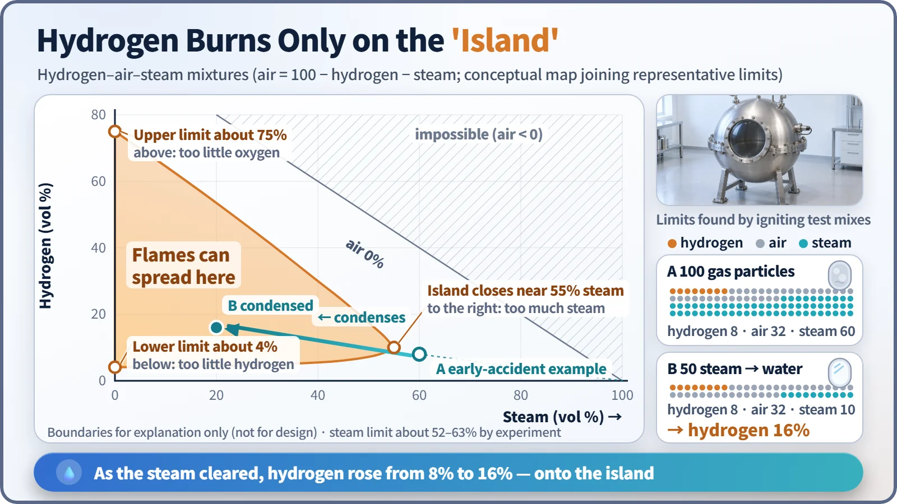
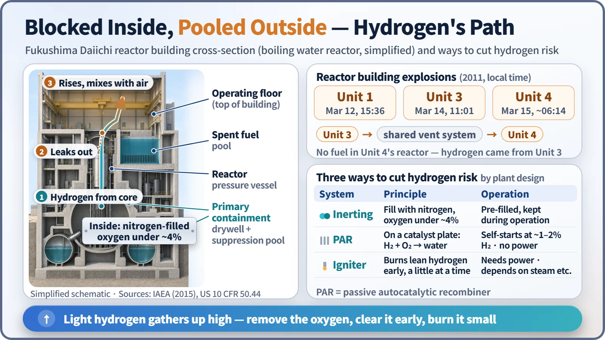

Safety Principles & Accident Analysis · 218
Watch Out When the Steam Clears — Why Hydrogen Explosions Can Happen at Nuclear Plants
A hydrogen explosion is chemistry, not a nuclear blast. It needs the right mix of hydrogen, air and steam, and clearing steam can tip the balance.
A hydrogen explosion at a nuclear plant is a chemical reaction, hydrogen burning with oxygen into water, not a nuclear blast. The hydrogen comes mainly from hot cladding reacting with steam, and it can burn only when hydrogen, air and steam are in the right proportions. Plants therefore remove oxygen, recombine hydrogen or burn it off early, and keep it from gathering in one place. [1]
The moment the steam clears
After a hot shower, the bathroom fills with steam; switch on the fan and the mirror clears. In a nuclear accident, though, that moment when the steam clears can be exactly when to be careful. Here is why hydrogen explosions can happen at nuclear plants, and why steam holds the key.
First of all, it's not a nuclear explosion
Hydrogen meets oxygen in the air and becomes water, giving off heat: ordinary burning. When it happens very fast, it creates pressure and a blast.
The main source is the zirconium-alloy cladding around the fuel. When a core that has lost cooling climbs well past 1,000°C, the cladding reacts with steam (Zr + 2H₂O → ZrO₂ + 2H₂). Water split by radiation also makes some hydrogen, but far more slowly and in smaller amounts. [3]
If all the cladding in a large plant reacted, it would produce a little over a tonne of hydrogen, more than 10,000 m³, close to a fifth of the gas in a large containment building. Hydrogen is the lightest gas, so like a helium balloon it rises and collects near the ceiling. [6]
Burnable mixtures sit on an island
For a flame to spread, hydrogen, oxygen (air) and steam have to be in the right proportions.
| Condition | Approximate value | Why it won't burn |
|---|---|---|
| Lower flammability limit | below about 4% hydrogen | too little hydrogen for a flame to spread |
| Upper limit | above about 75% hydrogen | too little oxygen |
| Steam inerting | above about 55% steam | steam soaks up heat and dilutes oxygen |
A chart of all three proportions, the Shapiro diagram, shows the burnable zone as a single patch, like an island. The values shift with temperature, pressure and flame direction; experiments put the steam limit at roughly 52 to 63%. [4] [5]

A slow burn, or a shock wave?
Deflagration is a flame that spreads by heating the gas next to it, slower than sound: a few meters per second in lean mixtures. Around 4 to 8% hydrogen it may burn weakly upward only and go out. But "slow" is not "safe": it can raise the pressure in a whole closed space, and obstacles can speed it up to hundreds of meters per second.
Detonation is a shock wave that crushes and ignites the gas ahead of it, fused with the flame. In the ideal hydrogen–air mix it reaches about 2,000 meters per second, with sudden, large, localized pressure that is far harsher on structures. [3]
No single concentration marks where flames speed up; steam, temperature, the size of the space and obstacles all matter. As a rough guide, above 10% hydrogen there is much more room for acceleration. The OECD Nuclear Energy Agency considers that internal containment structures can be endangered above flame speeds of about 100 meters per second, which is why U.S. regulations (10 CFR 50.44) require new plants to keep hydrogen below 10% even if all the cladding reacts. [2]
When the steam clears, the island draws near
Early in an accident, containment can be full of hot steam: say 8% hydrogen, 60% steam and 32% air. The steam is above 55%, so it won't burn.
If cooling returns and the steam condenses, hydrogen and air stay the same and only the steam drops out. With steam down to 20%, the mix is 16% hydrogen and 64% air, right in the middle of the island. Cooling is essential, but this is why reducing hydrogen ahead of time matters.
Fukushima: what happened outside the door
At Fukushima Daiichi in 2011, hydrogen explosions wrecked the reactor buildings of Units 1, 3 and 4. According to the IAEA, the primary containment vessels (the steel vessels directly around the reactors) were normally filled with nitrogen, which kept combustion inside them in check. [1]
The problem was hydrogen that leaked out into the surrounding reactor buildings, mixed with air, gathered in the upper spaces and exploded. Unit 4, whose reactor held no fuel, received hydrogen from Unit 3 through a shared exhaust system. The explosions damaged buildings and equipment, injured workers and made the response harder.

Before the mixture gets deep onto the island
| Approach | How it works | Notes |
|---|---|---|
| Inerting | Fill the containment with nitrogen so oxygen stays below about 4% | Some boiling water reactors with small containments |
| Passive autocatalytic recombiner (PAR) | Platinum and palladium plates turn hydrogen and oxygen into water without a flame | Starts on its own at about 1–2% hydrogen; no electricity. Installed in South Korea after Fukushima |
| Igniter | Electrically heated devices burn dilute hydrogen early, a little at a time | Burn it small before it piles up |
On top of that come systems that mix the gases evenly and monitor hydrogen and oxygen continuously. [2] [7]
Key takeaways
Hydrogen explosions are chemistry, and burning needs the right mix. The rule is to keep hydrogen from gathering in large amounts, in one place, together with air, and to remember that the island can exist outside the containment vessel, not just inside it. Factoring in even the moment the steam clears is what hydrogen management at a nuclear plant means.